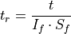
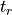
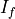
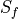

shared_tools¶
The tools are defined in pyDeltaRCM.shared_tools.
Time scaling functions¶
Scale the model time to “real” time.
Model time is executed as assumed flooding conditions, and executed at the per-second level, with a multi-second timestep. This model design implicitly assumes that the delta is always receiving a large volume of sediment and water at the inlet. This is unrealistic, given that rivers flood only during a small portion of the year, and this is when morphodynamic activity is largest. See Time in pyDeltaRCM for a complete description of this assumption, and how to work with the assumption in configuring the model.
Using this assumption, it is possible to scale up model time to “real” time, by assuming an intermittency factor. This intermittency factor is the fraction of unit-time that a river is assumed to be flooding.

where
 is the model time (
is the model time (time),  is the “real” scaled time,  is the intermittency factor, and  is the scale factor to convert base units of seconds to units specified as an input argument. Note that this function uses_scale_factorinternally for this conversion.- Parameters
time (
float) – The model time, in seconds.If (
float, optional) – Intermittency factor, fraction of time represented by morphodynamic activity. Should be in interval (0, 1]. Defaults to 1 if not provided, i.e., no scaling is performed.units (
str, optional) – The units to convert the scaled time to. Default is to return the scaled time in seconds (seconds), but optionally supply argument days or years for unit conversion.
- Returns
scaled – Scaled time, in
units, assuming the intermittency factorIf.- Return type
float- Raises
ValueError – if the value for intermittency is not
0 < If <= 1.
Scaling factor between model time and “real” time.
The scaling factor relates the model time to a real worl time, by the assumed intermittency factor and the user-specified units for output.
- Parameters
If (
float) – Intermittency factor, fraction of time represented by morphodynamic activity. Must be in interval (0, 1].units (
str) – The units to convert the scaled time to. Must be a string in [‘seconds’, ‘days’, ‘years’].